결과물, 준비물, 여덟 단계 지도
결과물은 두 가지예요. 한 장짜리 소개 페이지와, 친구 휴대폰에서 바로 열리는 진짜 인터넷 주소요. 왼쪽의 사진 한 장, 소개 메모, 링크 세 개가 가운데 페이지로 합쳐지고, 그 주소가 오른쪽 휴대폰에서 열리는 그림이에요. 코드는 직접 쓰지 않아요.
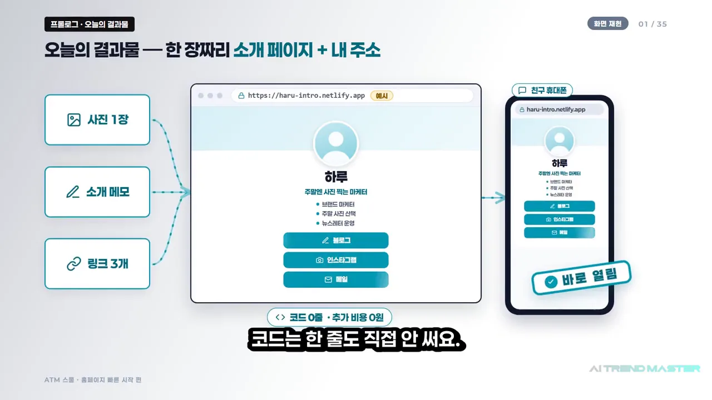
준비물은 카드 네 장에 정리돼 있어요. 첫 카드의 클로드 코드는 설치와 로그인을 마친 상태를 가정하고, 맨 아래 빨간 글씨대로 무료 플랜에는 없어요. 프로가 월 20달러부터예요. 나머지는 넷리파이 무료 계정, 사진과 소개 메모, 크롬 브라우저예요. 영상은 2026년 10월 공식 문서 기준으로 이것 말고 추가 비용은 0원이라고 해요.
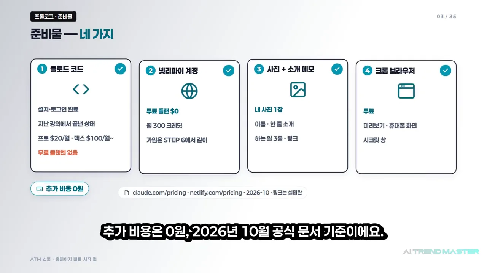
이 영상은 페이지 한 장을 올리는 데까지만 다뤄요. 메뉴, 갤러리, 여러 언어, 내 도메인, 검색 등록은 범위 밖이에요. 전체 순서는 여덟 단계인데, 슬라이드의 빨간 점선이 경계예요. 왼쪽 다섯 칸(폴더, 지시서, 미리보기, 고치기, 휴대폰)은 내 컴퓨터 안에서 끝나고, 오른쪽 세 칸(올리기, 공개, 나누기)부터 인터넷으로 나가요.
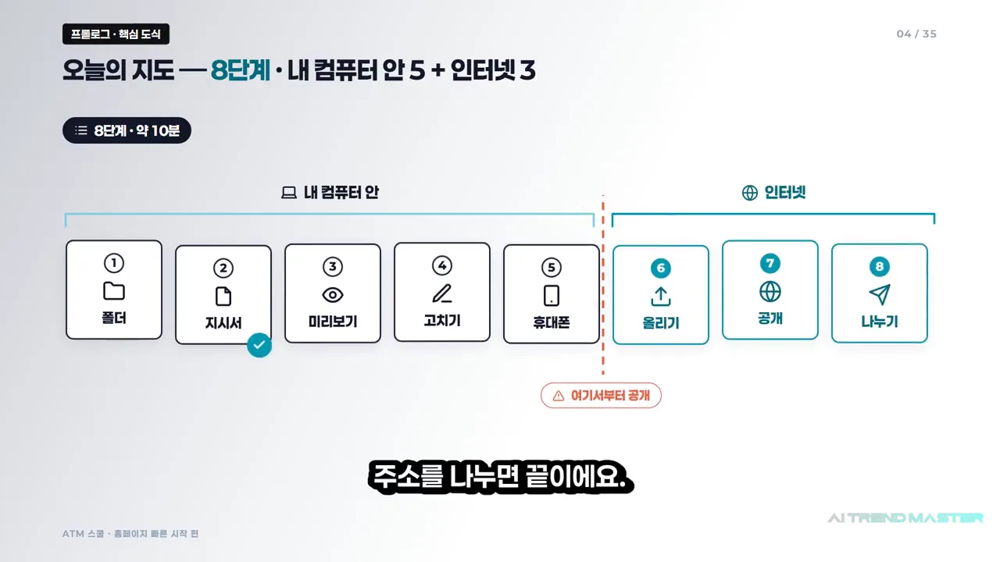
폴더를 만들고 지시서로 페이지 만들기
STEP 1: 영어 이름 폴더와 사진 한 장
C 드라이브 바로 아래에 영어 이름 폴더를 만들고 사진을 넣어요. 영상의 예시는 my-intro 폴더와 me.jpg예요. VS Code의 파일 메뉴에서 이 폴더를 열고, 스파크 아이콘을 눌러 클로드 코드 패널을 켜요. 왼쪽 탐색기에 폴더 이름과 사진 한 장이 보이고, 오른쪽 패널 입력창에 커서가 깜빡이면 준비가 끝난 거예요.
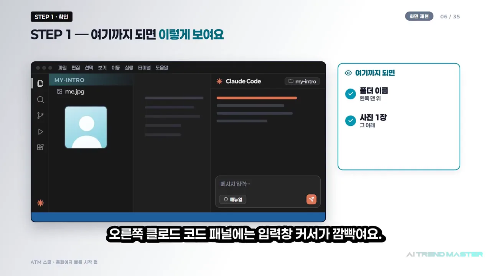
이름을 대충 지으면 올린 뒤에 사진이 안 보일 수 있어요. 슬라이드 왼쪽 빨간 칸의 내 사진.JPG, Photo 1.jpg, 프로필사진.jpeg가 나쁜 예예요. 아래 두 줄이 이유인데, 내 컴퓨터는 ME.JPG와 me.jpg를 같은 파일로 보지만 인터넷 서버는 다른 파일로 볼 수 있어요. 그래서 처음부터 오른쪽 칸처럼 영어 소문자로 짓고, 띄어쓰기 대신 하이픈을 써요.
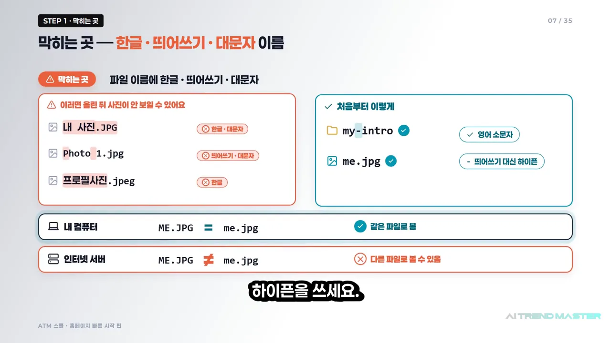
STEP 2: 지시서 한 장으로 만들기
지시서는 빈칸을 채우는 양식이에요. 왼쪽 양식의 칸은 이름, 한 줄 소개, 하는 일 세 줄, 링크, 분위기 다섯 개예요. 채운 양식을 통째로 복사해 입력창에 붙여 넣으면, 오른쪽처럼 클로드가 폴더를 만들고 파일을 쓰고 사진을 복사해요.
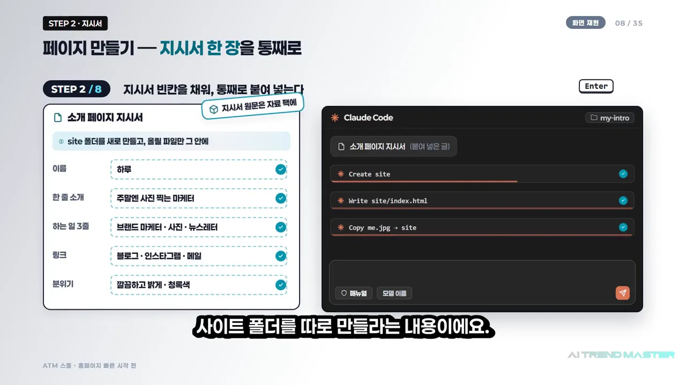
지시서의 핵심은 첫 줄이에요. 인터넷에 올릴 파일만 담는 site 폴더를 따로 만들라는 내용이거든요. 슬라이드에서 점선으로 묶인 index.html과 me.jpg가 그 폴더예요. index.html이 웹페이지의 첫 화면이고, 원본 사진은 바깥에 그대로 남아요. 나중에는 점선 안쪽만 올라가요.
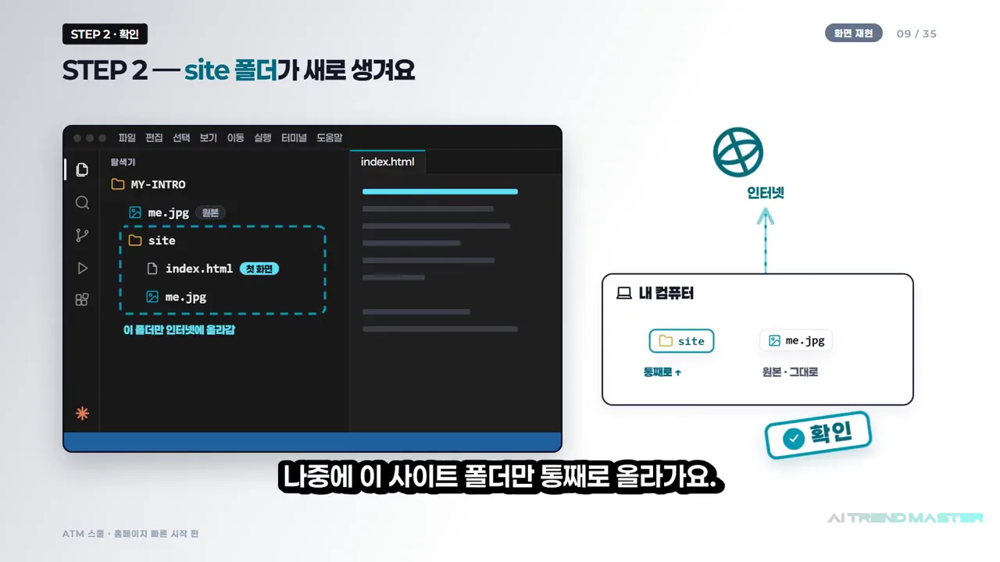
매뉴얼 모드라면 이 과정에서 허락 창이 여러 번 떠요. 슬라이드 오른쪽 두 줄이 판단 기준이에요. 폴더 안에서 만들고 쓰고 복사하는 건 Yes, 지우거나 폴더 밖을 건드리는 건 No예요. 클로드가 색이나 구성을 되물으면 짧게 답하거나 알아서 정해 달라고 하면 돼요.
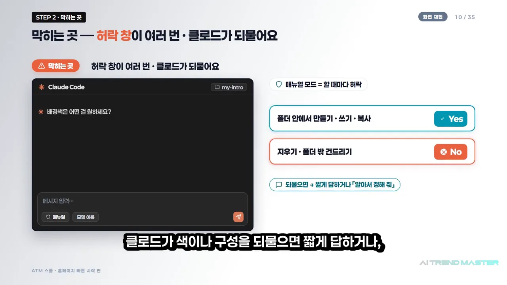
미리 보고, 고치고, 휴대폰 폭으로 확인하기
STEP 3: 브라우저로 미리보기
탐색기에서 index.html을 오른쪽 클릭해 파일 탐색기에 표시를 누르고, 열린 창에서 더블클릭하면 브라우저로 열려요. 클로드에게 열어 달라고 해도 돼요. 위에서부터 사진, 이름과 한 줄 소개, 하는 일 세 줄, 링크 버튼 순서면 맞아요. 슬라이드 위쪽 주소창을 보면 file:///로 시작하는데, 내 컴퓨터의 파일을 여는 중이라 아직 나만 볼 수 있다는 뜻이에요.
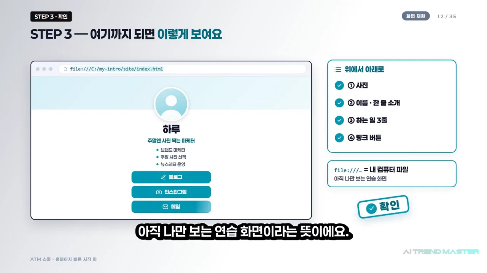
file:///로 시작하면 아직 공개되지 않은 연습 화면이에요. 영상 03:44에서 보기사진 자리에 깨진 그림 표시만 보이면 원인은 슬라이드 위쪽의 빨간 표시 두 개 중 하나예요. 사진이 site 폴더 밖에 있거나 이름이 달라요. 아래 패널처럼 입력창에 사진이 깨져 보인다고 그대로 쓰면, 클로드가 폴더를 확인하고 고쳐요.
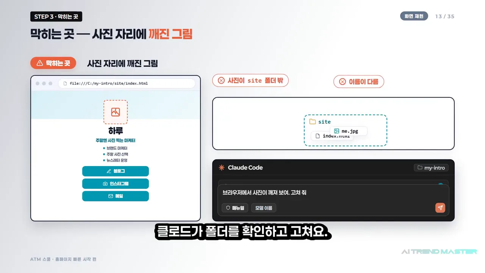
STEP 4: 보이는 대로, 한 번에 하나씩
고칠 때 요령은 보이는 대로 말하는 거예요. 슬라이드 왼쪽 패널에 예시 세 문장이 있어요. 사진을 동그랗게 조금 더 크게, 메인 색을 짙은 청록색으로, 한 줄 소개를 두 줄로. 문장마다 Edit site/index.html이 한 번씩 찍혀요. 이렇게 하나씩 시켜야 해요. 한꺼번에 말하면 어디서 꼬였는지 찾기 어렵거든요.
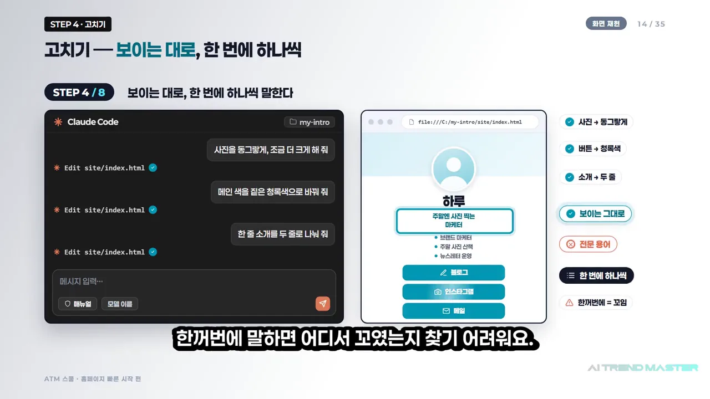
하나 고칠 때마다 브라우저에서 F5를 눌러요. 왼쪽 '처음'과 오른쪽 '고친 뒤'를 비교하면 사진 모양과 버튼 색이 달라요. 이 변화가 바로 보이면 성공이에요.
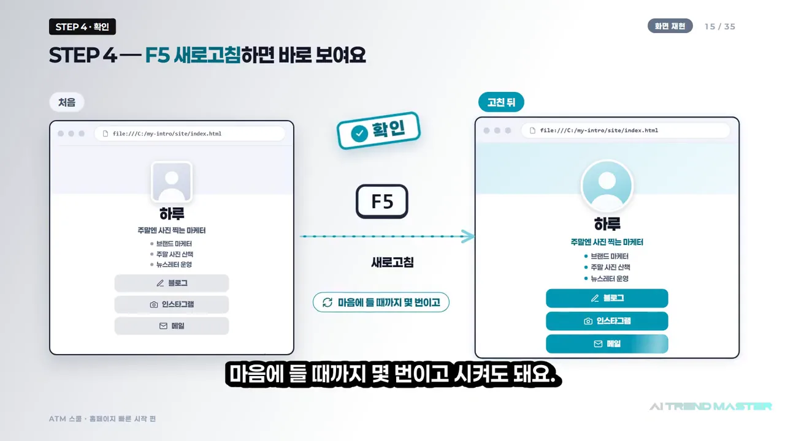
고쳤다는데 화면이 그대로면 브라우저가 예전 화면을 들고 있는 거예요. 새로고침부터 해 봐요. 고치다 망쳤다면 슬라이드 오른쪽처럼 /rewind를 입력해 이전 상태로 돌아가요. 방금 바꾼 걸 되돌려 달라고 말해도 돼요.
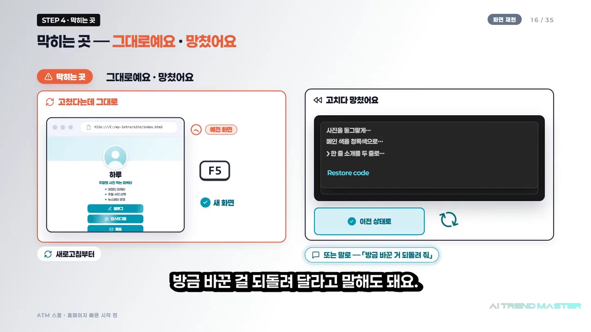
STEP 5: 휴대폰 폭 확인과 올리기 전 점검
소개 페이지는 대부분 휴대폰으로 열려요. 크롬에서 F12로 개발자 도구를 열고 Ctrl+Shift+M을 누르면 슬라이드처럼 화면이 휴대폰 폭으로 좁아져요. 위쪽 목록에서 기종을 하나 고르고, 다 봤으면 F12를 다시 눌러 닫아요.
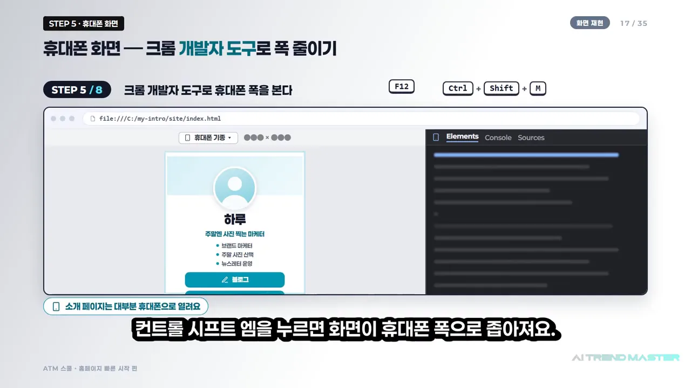
글씨가 잘리거나 옆으로 밀려도 보이는 대로 말하면 돼요. 슬라이드 왼쪽이 긴 이름 때문에 화면이 밀린 상태, 가운데가 그걸 말로 전한 입력창, 오른쪽이 고친 결과예요. 다만 개발자 도구는 비슷하게 흉내 내는 거라, 진짜 휴대폰 확인은 올린 다음에 한 번 더 해요.
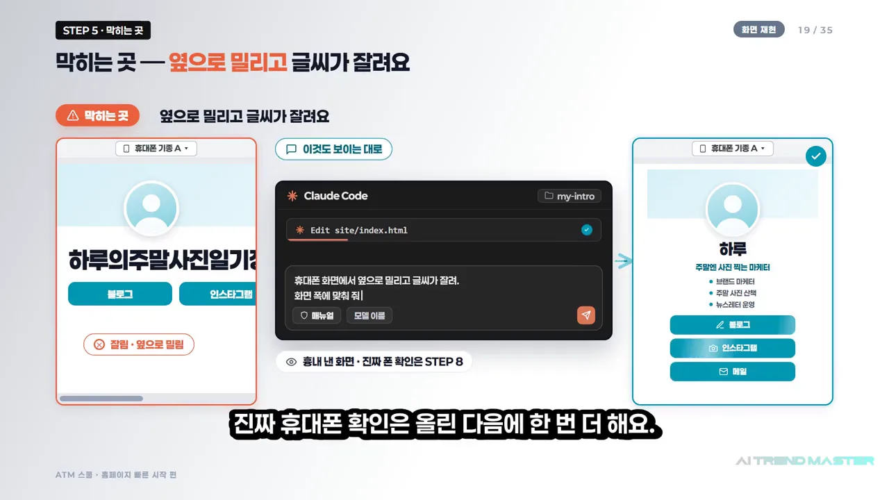
올리기 전 점검은 카드 세 장이에요. 첫째, 인터넷에 올리면 누구나 보니까 전화번호와 집 주소는 빼고 이메일도 꼭 필요할 때만 넣어요. 둘째, 링크 버튼을 하나씩 눌러 제대로 열리는지 봐요. 셋째, site 폴더 안에는 index.html과 사진, 딱 두 개만 있어야 해요. 폴더 안 파일은 전부 공개되거든요.
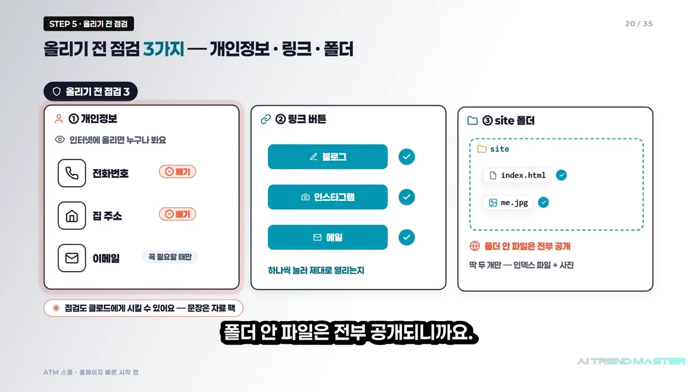
넷리파이에 올리고 크레딧 아끼기
넷리파이는 내 폴더를 하루 종일 켜져 있는 인터넷 공간에 올려 주는 서비스예요. 슬라이드 왼쪽 내 컴퓨터 칸의 메모처럼, 내 컴퓨터에만 있으면 끄는 순간 아무도 못 봐요. 가운데 넷리파이에 올려 두면 오른쪽 기기들이 언제든 열 수 있어요. 지난 강의에서 배포 명령을 금지 칸에 넣어 뒀기 때문에, 올리는 순간은 클로드에게 맡기지 않고 손으로 폴더를 끌어다 놓아요.
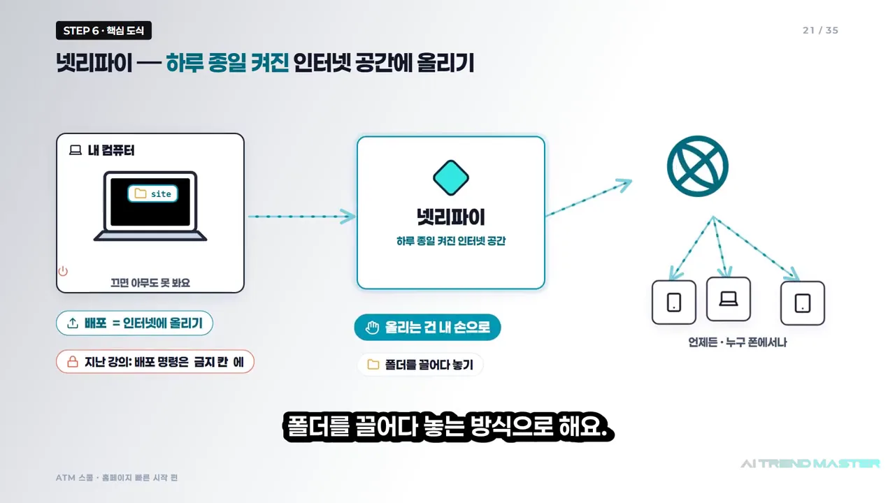
무료 플랜의 크레딧
무료 플랜은 한 달에 300 크레딧을 줘요. 슬라이드 오른쪽 '쓰는 양' 칸을 보면 올리기 한 번에 15, 대역폭 1GB에 20, 요청 1만 건에 2 크레딧이에요. 영상의 결론은 간단해요. 다 쓰면 내 사이트가 전부 멈추니까, 고칠 건 내 컴퓨터에서 다 고치고 모아서 한 번에 올려요.
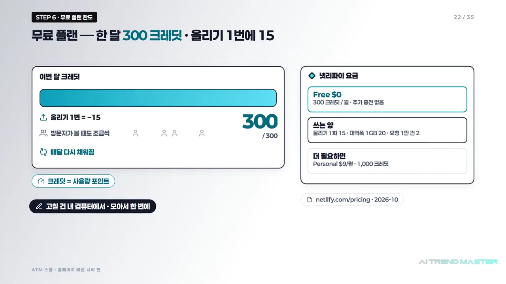
이번 달 사용 0 크레딧
- 대역폭과 요청을 0으로 두고 올리기를 20번까지 올려 보세요. 올리기만으로 300 크레딧이 끝나요.
- 올리기를 4번으로 두고 대역폭을 늘려 보세요. 방문자가 많아지면 '모아서 올리기'만으로는 부족하다는 걸 볼 수 있어요.
STEP 6: 가입하고 끌어다 놓기
넷리파이 가입 페이지에서 구글 계정이나 이메일로 가입한 뒤 Netlify Drop 페이지를 열어요. 슬라이드 위쪽 주소창에 app.netlify.com/drop이 보여요. 왼쪽 탐색기의 site 폴더를 오른쪽 점선 칸으로 통째로 끌어다 놓으면 몇 초 만에 올라가요.
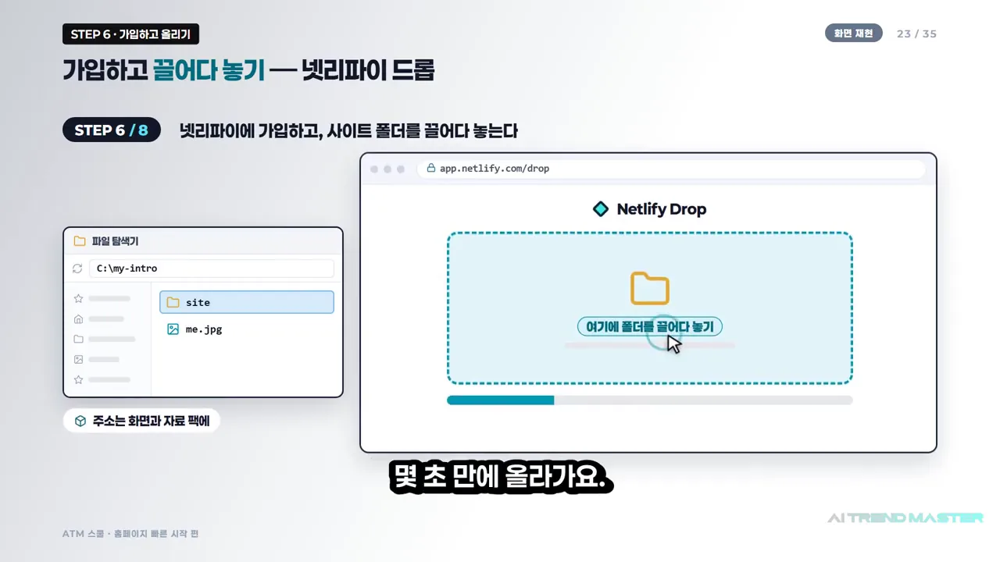
my-intro가 아니라 그 안의 site예요. 영상 06:44에서 보기끝나면 프로젝트 화면이 열려요. 슬라이드에서 netlify.app으로 끝나는 무작위 주소, Published와 Private 표시를 찾으면 돼요. Published는 올리기가 끝났다는 뜻이고, 자물쇠가 달린 Private는 비공개라는 뜻이에요. 다음 단계에서 풀어요.
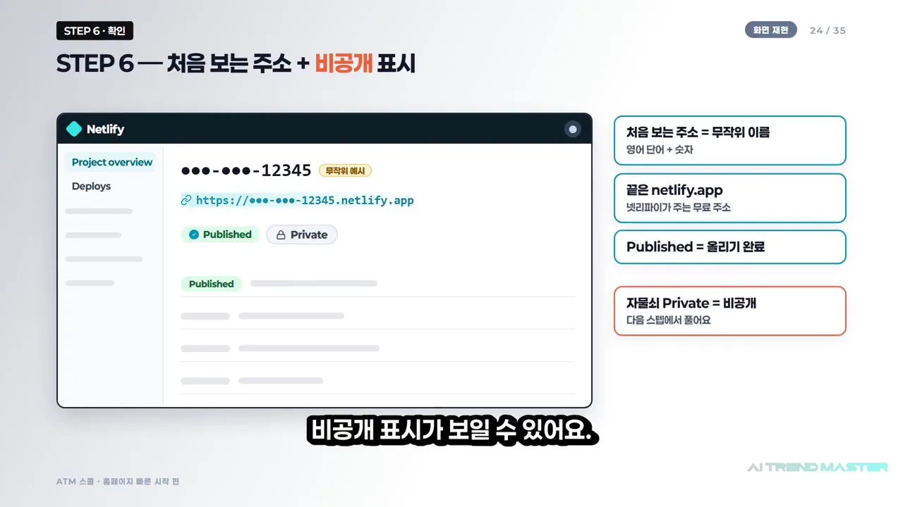
Published와 Private가 함께 보일 수 있어요. 영상 07:01에서 보기주소를 열었는데 페이지를 찾을 수 없다는 화면이 뜨면, 십중팔구 폴더를 잘못 올린 거예요. 슬라이드 왼쪽처럼 작업 폴더째 올렸거나 폴더 안에 폴더가 또 있으면 index.html이 한 층 아래로 숨어요. 오른쪽처럼 index.html이 바로 들어 있는 site 폴더를 다시 올려요.
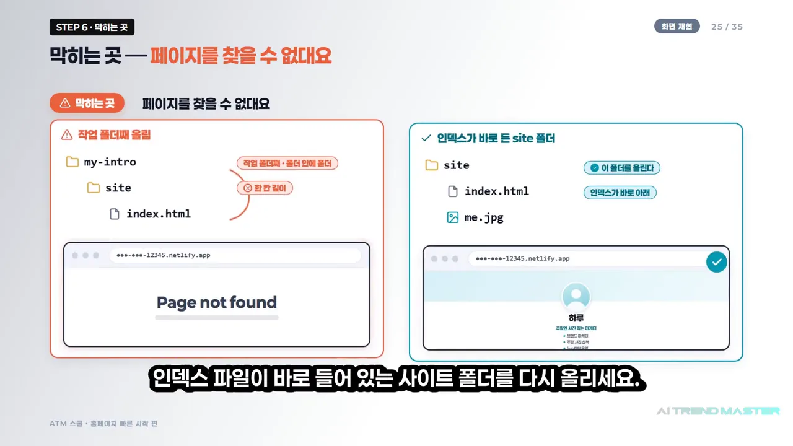
index.html이 한 칸 깊고, 오른쪽은 맨 위에 있어요. 차이는 이 한 칸이에요. 영상 07:19에서 보기공개로 바꾸고 주소 나누기
STEP 7: 공개로 바꾸고 이름 정하기
영상은 2026년 7월 말 이후에 만든 넷리파이 계정이라면 새 프로젝트가 비공개로 시작한다고 해요. 슬라이드 왼쪽 휴대폰처럼 친구에게는 접근 권한이 없다는 화면이 떠요. 프로젝트 화면의 Make public을 누르고, 뜨는 창에서 주소 이름도 정해요. 영어 이름 뒤에 intro를 붙인 haru-intro가 예시예요.
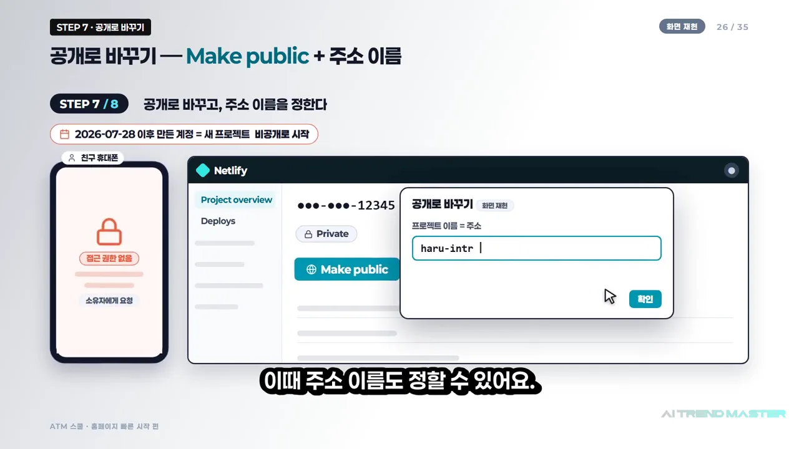
공개가 됐는지는 내 브라우저로 확인하면 안 돼요. 나는 로그인된 상태니까요. Ctrl+Shift+N으로 시크릿 창을 열어 새 주소를 넣으면 로그인하지 않은 남의 눈으로 볼 수 있어요. 슬라이드처럼 거기서 페이지가 뜨면 공개 완료예요. 오른쪽 메모대로 주소창의 안전한 연결 표시도 무료로 자동으로 붙어요.
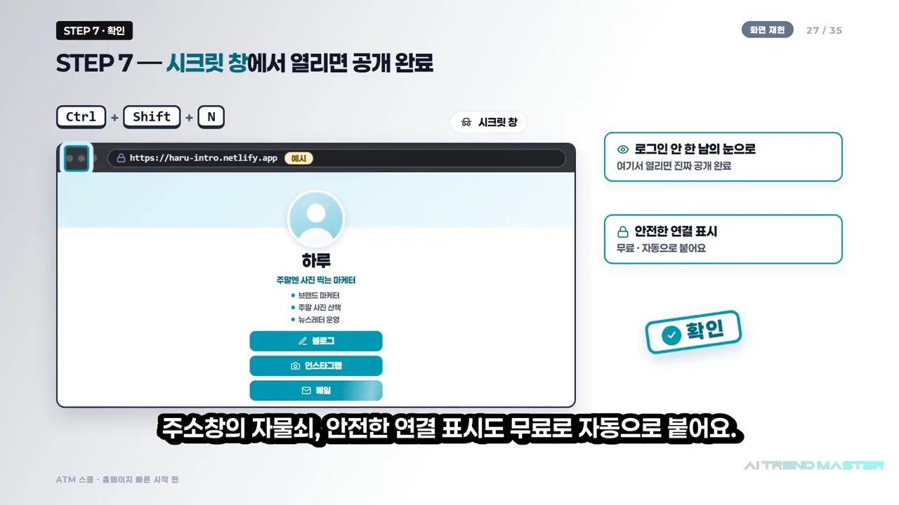
이름이 저장되지 않으면 누가 이미 쓰는 이름이에요. 슬라이드 왼쪽의 haru-intro-2처럼 숫자나 하이픈을 붙여요. 영어 소문자, 숫자, 하이픈은 되고 한글과 띄어쓰기는 안 돼요. 오른쪽 빨간 칸은 이름을 바꿀 때 조심할 점이에요. 주소도 같이 바뀌어서 이미 나눠 준 주소는 안 열리니까, 나눠 준 뒤엔 그대로 둬요. 예전에 만든 계정이라 처음부터 공개였다면 이름만 정하면 돼요.
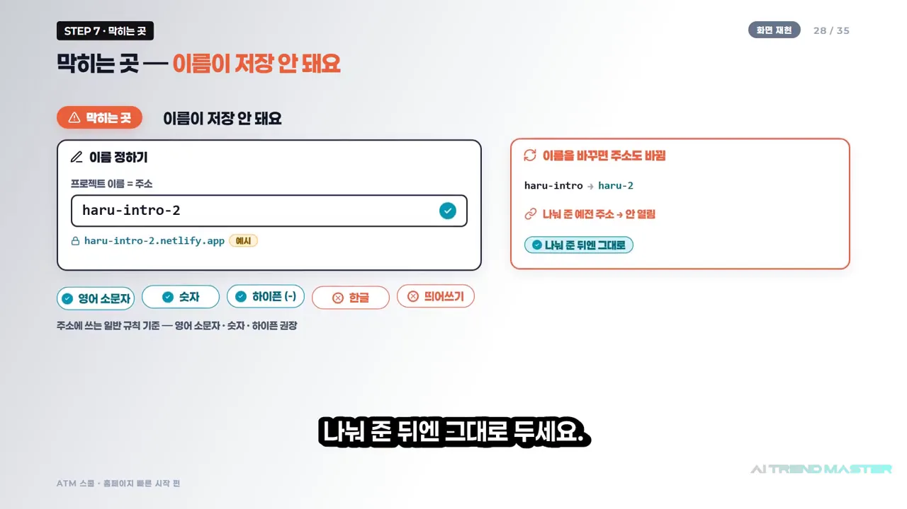
STEP 8: 주소 나누기
주소를 복사해 메신저로 내 휴대폰에 보내고 눌러 봐요. 5단계에서 미뤄 둔 진짜 휴대폰 확인이 이거예요. 괜찮으면 슬라이드 오른쪽의 세 곳, 프로필 링크, 이메일 서명, 명함에 넣어요.
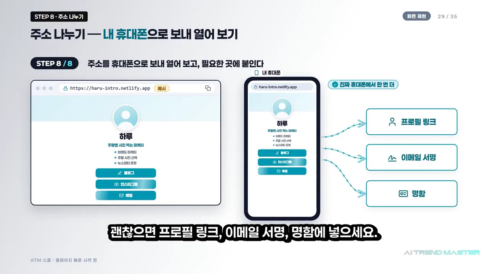
슬라이드 왼쪽 노트북은 꺼져 있는데 오른쪽 휴대폰에선 페이지가 열려요. 올린 다음부터는 내 컴퓨터가 아니라 넷리파이가 페이지를 보여 주기 때문이에요.
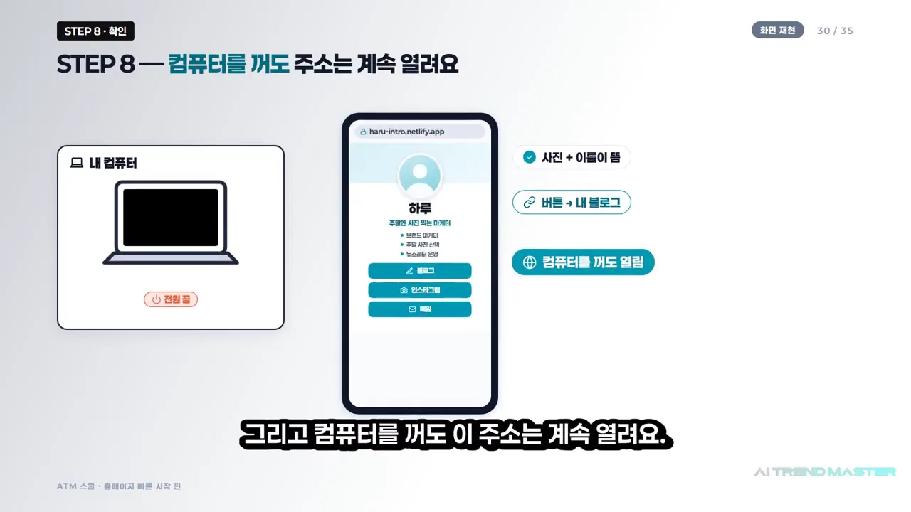
고칠 때는 같은 자리에
고친 폴더를 Drop 페이지에 또 올리면 슬라이드 왼쪽처럼 무작위 주소가 하나 더 생겨요. 같은 주소에 반영하려면 오른쪽처럼 내 프로젝트의 Deploys 메뉴에 들어가, 맨 아래 끌어다 놓는 칸에 site 폴더를 올려요. 이때도 한 번에 15 크레딧이 드니까 모아서 올려요.
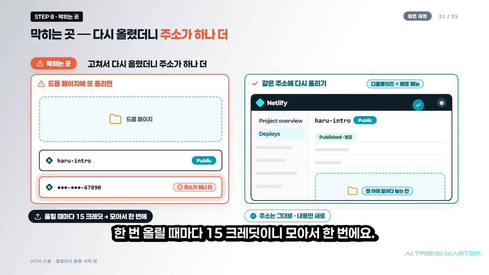
Deploys 메뉴예요. 영상 09:02에서 보기막히는 곳 한눈에
영상이 단계마다 짚은 막히는 곳을 증상별로 모았어요.
| 증상 | 원인 | 할 일 |
|---|---|---|
| 사진 자리에 깨진 그림 | 사진이 site 밖에 있거나 이름이 달라요 | 입력창에 증상을 그대로 써요 |
| 고쳤다는데 화면이 그대로 | 브라우저가 예전 화면을 들고 있어요 | F5로 새로고침해요 |
| 글씨가 잘리거나 옆으로 밀림 | 좁은 화면에 맞지 않아요 | 보이는 대로 말해 고쳐요 |
| 페이지를 찾을 수 없음 | 작업 폴더째 올렸거나 폴더가 한 겹 더 있어요 | index.html이 바로 든 site를 다시 올려요 |
| 친구가 접근 권한 없음을 봄 | 새 프로젝트가 비공개로 시작해요 | Make public을 눌러요 |
| 주소 이름이 저장되지 않음 | 누가 이미 쓰는 이름이에요 | 숫자나 하이픈을 붙여요 |
| 다시 올렸더니 주소가 하나 더 | Drop 페이지에 또 올렸어요 | Deploys 메뉴 아래 칸에 올려요 |
체크리스트
영상은 여덟 칸이 모두 체크되면 완성이라고 해요. 슬라이드의 왼쪽 네 칸은 폴더, 지시서, 미리보기, 고치기, 오른쪽 네 칸은 휴대폰과 개인정보 점검, 올리기, 공개, 열어 보기예요.
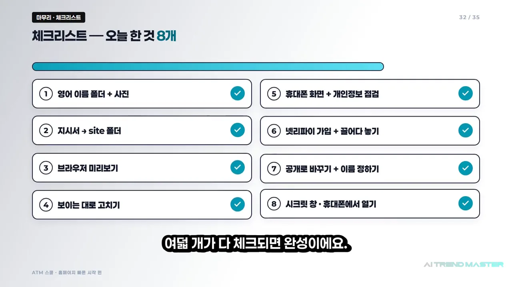